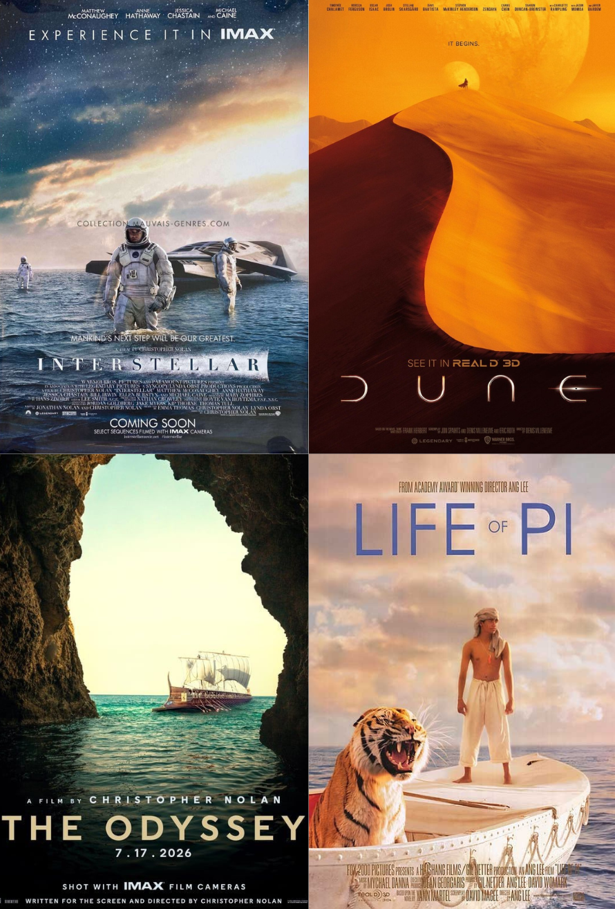
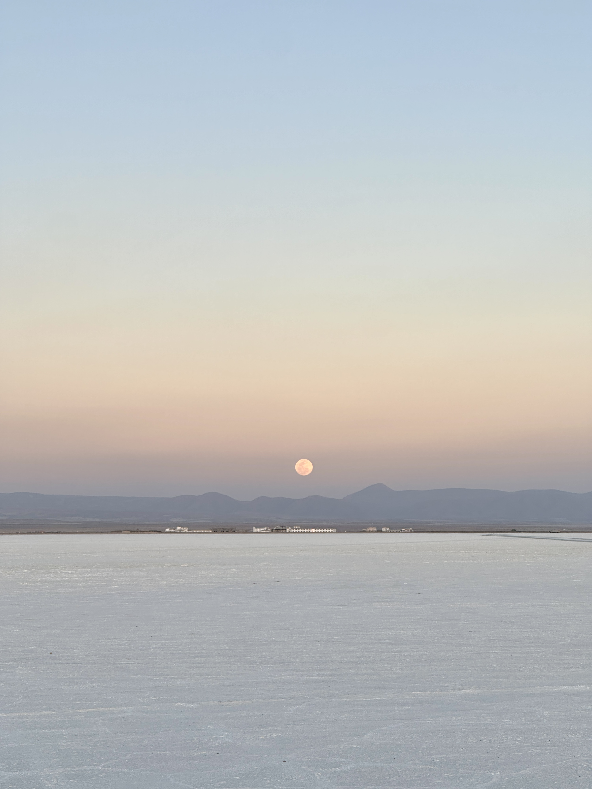
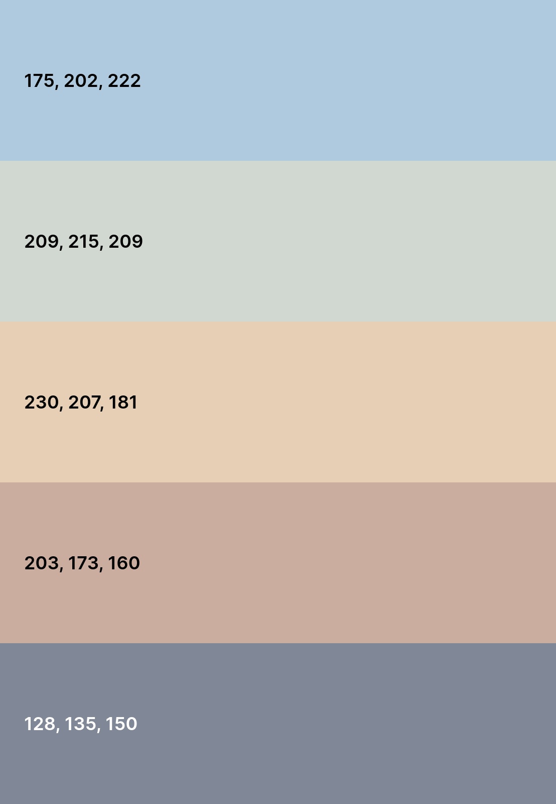

Objective
Communicate hope, curiosity, and gratitude toward Earth through the first human born on the Moon. Original Salar de Uyuni photography captures the protagonist's journey rediscovering human roots.
Research
Analyzed emotional sci-fi posters: Dune, Interstellar, Life of Pi. Epic journeys + vast landscapes create isolation and wonder.

- Typography: Bold geometric sans-serif, all-caps titles
- Scale: Small figures vs vast landscapes/negative space
- Color: Cool skies + warm earth tones for mystery/hope
- Layout: Centered title + bottom credits block
Key findings:
Typography Choices
Terano (Primary): Futuristic geometric sans-serif for title
Avignon (Secondary): Clean hierarchy for credits/release info
White text maximizes image color impact per classic sci-fi convention.
Color System
Natural original photography palette preserved:


Key Learnings
- Negative space + gradients convey emotion better than element overload
- Classic film layouts create instant professional recognition
- Personal stories strengthen authentic visual communication